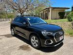

1400cc
Turbo.
Gasolina.
Dirección hidráulica.
Cierre central.
Vidrios tintados.
Vidrios eléctricos.
Bolsa de aire.
Alarma.
Espejos eléctricos.
Frenos ABS.
Aire acondicionado.
Desempañador trasero.
Aros de lujo.
Tapicería de cuero.
Cruise control.
Radio con USB/AUX.
RTV al día.
Control electrónico de estabilidad.
Caja de cambios dual.
Cámara de retroceso.
Sensores de retroceso.
Control de radio en el volante.
Volante multifuncional.
Aire acondicionado climatizado.
Luces de Xenón/Bixenón.
Sensor de lluvia.
Computadora de viaje.
Volante ajustable.
Bluetooth.